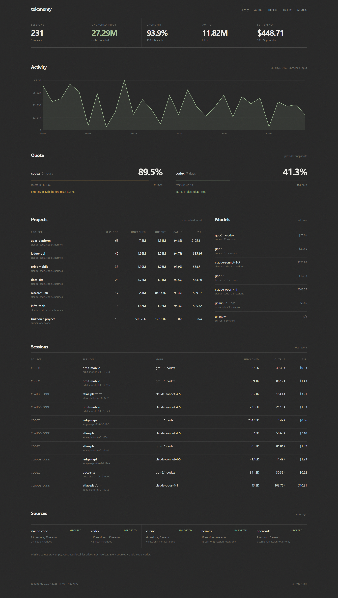
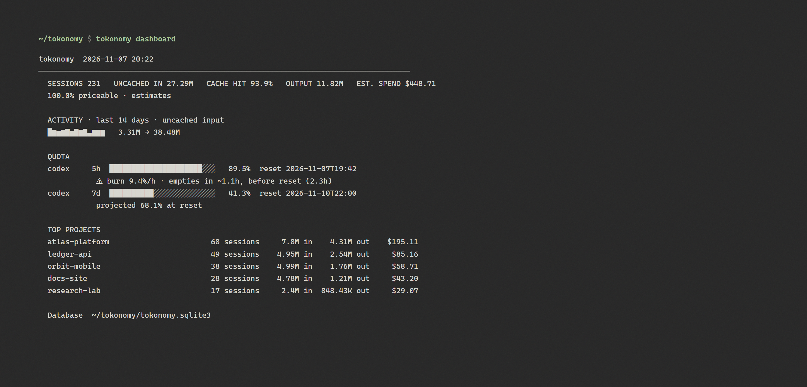

AI usage,
measured locally.
Reads the session files Codex and Claude Code already write. Keeps token counts, drops prompts. Install.

Input
Cached tokens are not context.
Codex counts cache reads as input. That turns 46.6M tokens of real context into a 1.96B headline. tokonomy reads the same records and separates the two.
1.96Breported input
46.6Muncached input
Quota
Quota before reset.
tokonomy reads the provider's own reset timestamp, measures your recent burn rate, and tells you when the window will run out. If there is not enough history, it says that too.

Install
One clone.
git clone https://github.com/cenkergultekin/tokonomy.git cd tokonomy .\install.ps1
tokonomy scan --force tokonomy web claude mcp add tokonomy -- tokonomy mcp
MIT. Local SQLite. No telemetry. Delete a source with tokonomy delete --source codex --yes.